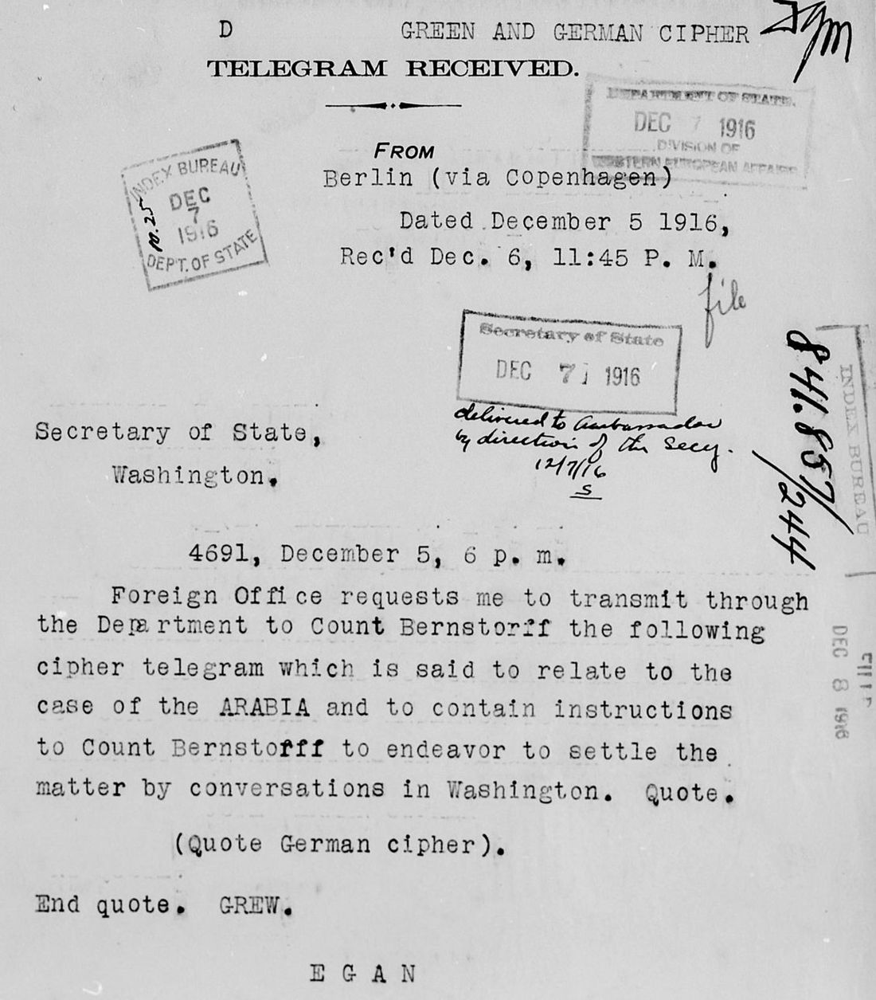

At a glanceNot solved · text not obtained
- The telegram
- The German Foreign Office to Count Bernstorff, ambassador at Washington, 5 December 1916, sent through Joseph Grew, American chargé in Berlin, and the State Department.
- Where
- National Archives (NARA), RG 59, file 841.857/244, microfilm M580 reel 191 frame 0111: Grew’s covering telegram 4691. Printed as FRUS 1916 Supplement, doc. 424, without the cipher.
- The cipher
- A German diplomatic code, sent over the American channel. Not identified: no group survives to measure.
- What it says
- Grew reports that it is “said to relate to the case of the ARABIA” and to instruct Bernstorff to settle the matter by conversations in Washington. Bernstorff’s own letter of 8 December confirms the instruction in outline.
- Still open
- All of it. The file copy reads “(Quote German cipher)” and the groups went to the ambassador. A German draft or a British decrypt may survive.
01 The telegram and its placeholder
On 5 December 1916 the German Foreign Office asked Grew to pass a cipher telegram to Bernstorff through the State Department. Grew sent his covering telegram, number 4691, in the American “Green” code via Copenhagen; it reached Washington at 11.45 p.m. on 6 December. It says the cipher is “said to relate to the case of the ARABIA and to contain instructions to Count Bernstorff to endeavor to settle the matter by conversations in Washington”. Where the German groups belong, the typed copy has the clerk’s words “(Quote German cipher)”. A note in the margin says it was “delivered to Ambassador by direction of the Secy 12/7/16”.

So the groups left the Department with the ambassador. The file keeps only the cover. The same day Grew sent a second telegram, 4692, in clear: the Foreign Office’s confidential oral statement on the Marina applies equally to the Arabia.
The nearest plaintext is not the telegram. On 8 December Bernstorff wrote to Lansing that word from Berlin had reached him late on the 7th, and that his government had instructed him to place himself at Lansing’s disposal for a speedy, satisfactory settlement of the Marina and Arabia cases. That fits Grew’s summary and adds no wording to attack.
02 What was searched
- The film around it. Frames 0109–0113 of M580 reel 191, files 841.857/242–246: the placeholder, the clear telegram 4692, a consular report from Havre, a YMCA letter on the one American passenger of the Arabia. No German code group on any sheet.
- FRUS. Doc. 424 prints the cover and marks the cipher not printed.
- Bernstorff, Deutschland und Amerika (1920). Full text searched for Arabia: it names only the Arabic of 1915 and, once, the Marina and Arabia in a report of the 1916–17 peace action. The telegram is not printed.
- Earlier sweeps. The search for German code sheets in the State Department files, made for Bernstorff’s telegram of 10 January 1917 (a different text, with its own page), found that incoming ciphers left the Department and only Bernstorff’s outgoing ones survive. This telegram is therefore no crib for that one.
03 What remains
- The telegram itself: not read. Blocker: needs the German text. The draft should sit in the Foreign Office’s own archive in Berlin (Politisches Archiv); British codebreakers read much German diplomatic traffic of these years, so a decrypt may be among the Room 40 papers at The National Archives (HW 7, ADM 137). Neither was checked online. With the groups, the code could be named by their range; without them nothing can be tried.
04 Sources
- Grew to the Secretary of State, telegram 4691, 5 December 1916: FRUS 1916, Supplement, The World War, doc. 424 (file 841.857/244); telegram 4692: doc. 422 (file 841.857/243).
- NARA, RG 59, microfilm M580 reel 191, frames 0110–0113, National Archives Catalog, naId 580879489.
- Bernstorff to Lansing, 8 December 1916: The Lansing Papers, 1914–1920, vol. I, no. 547.
- J. H. von Bernstorff, Deutschland und Amerika (Berlin: Ullstein, 1920), via the Internet Archive.
Notes and profile: targets/arabia1916/.
Cite this page
Daniel Bourdeau, “German Foreign Office to Bernstorff, 5 December 1916: the Arabia cable”, Cyphersolver, posted 6 November 2026, https://cyphersolver.com/arabia1916.html.